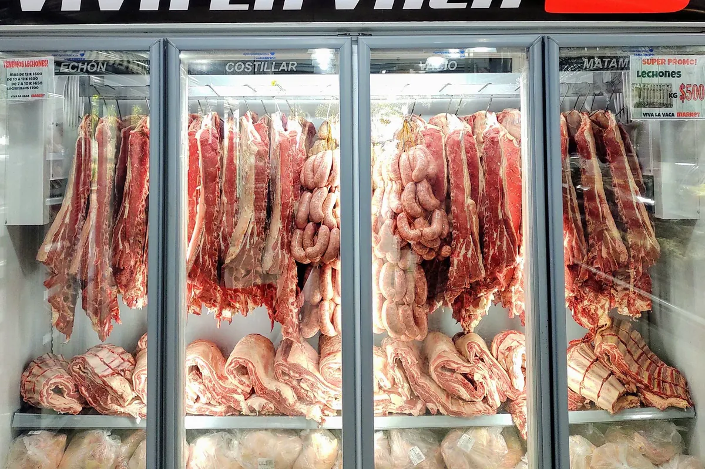
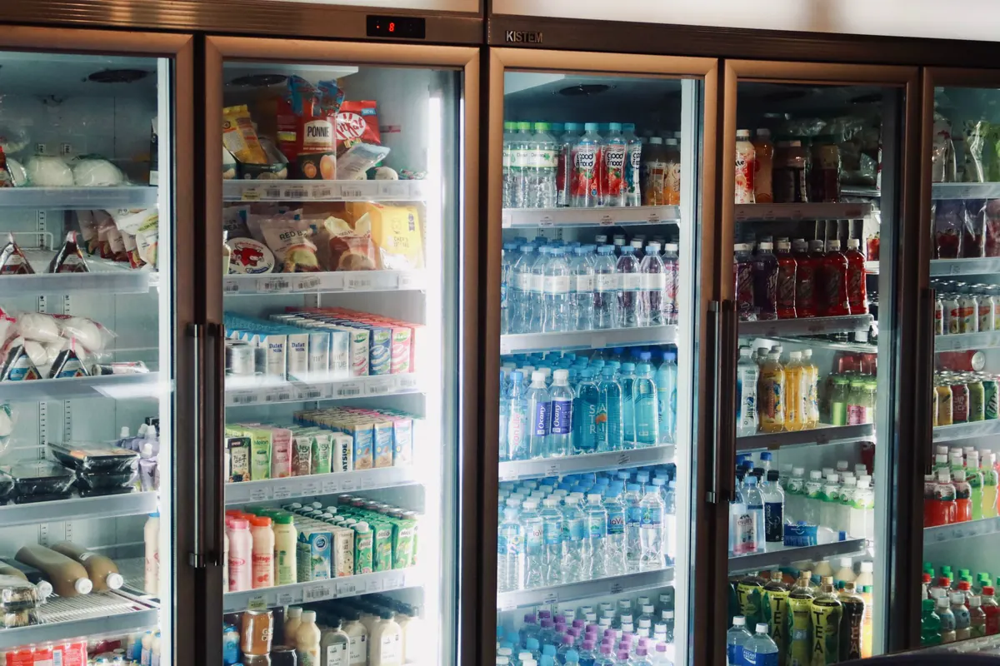

Câmara fria desenhada para a operação do varejo
Esta página trata da câmara fria de açougue, mercado e supermercado: como a carne e os demais perecíveis chegam, onde ficam, como saem para o balcão e o que a vigilância sanitária confere na loja. O funcionamento geral de uma câmara — carga térmica, painel, refrigeração e parâmetros por produto — está na página de câmaras frias em Vitória ES. Se o seu negócio é cozinha, com mise en place e porta abrindo a cada pedido, o recorte certo é o da câmara fria para restaurante.
No varejo, a câmara é o estoque do que mais gira e do que mais estraga. Ela recebe carga pesada de uma vez, precisa guardar produtos com exigências diferentes lado a lado e abastece balcões e expositores durante o dia inteiro. Um projeto que ignora esse fluxo pode até manter a temperatura no display do controlador, mas faz a loja perder peso de carne, tempo de reposição e pontos na vistoria sanitária.
A Axial Engenharia atende açougues, casas de carne, mercados de bairro, supermercados e centros de distribuição em Vitória, Vila Velha, Serra, Cariacica e região, do projeto à montagem, com responsável técnico e ART.
Recebimento: carcaça no trilho, caixa na prateleira, palete na doca
O primeiro dado do projeto é como o produto chega. Ele define o layout interno, a porta, o piso e até a estrutura da câmara.
Carne em carcaça: trilho e gancho
Quando o fornecedor entrega meia carcaça ou quarto, a câmara de carne leva trilho aéreo com ganchos e roldanas. A peça entra pendurada, corre até a posição e não encosta no piso nem na parede. O espaçamento entre peças deixa o ar circular em volta de cada uma, o que uniformiza o resfriamento. O trilho, porém, não pode ser pendurado no painel isotérmico do teto: precisa de estrutura metálica própria ou de ancoragem na estrutura do prédio, dimensionada para a carga concentrada e para o impacto da movimentação. A altura livre também é definida pelo comprimento da peça pendurada, e o trilho precisa continuar até a sala de desossa sem que a carne passe por área quente.
Carne desossada, frios e laticínios: prateleira
Caixas de carne embalada a vácuo, frios, queijos e laticínios ficam em prateleiras de material sanitário, afastadas do piso e da parede, com corredor que permita a limpeza e a conferência. A organização segue a regra simples do primeiro que vence, primeiro que sai.
Volume de supermercado e centro de distribuição: palete
Em loja grande ou CD, a carga chega paletizada. A câmara precisa de porta larga para transpaleteira ou empilhadeira, piso que aguente a carga de roda sem trincar o revestimento e proteção de painel na altura dos garfos. Batida de palete em parede de câmara é causa frequente de painel furado e perda de isolamento.
Porta de doca e antecâmara
Onde há doca, a câmara de congelados não deve abrir direto para a rua. Uma antecâmara refrigerada entre a doca e a câmara reduz a entrada de ar quente e úmido, que vira gelo no evaporador e no piso. Porta rápida ou de correr com vedação, cortina de PVC, vedação de doca junto ao baú do caminhão e iluminação estanque completam o conjunto. Se a loja ou o CD ainda vai ser construído, vale projetar a câmara junto com a construção do galpão, e não encaixá-la depois num vão que sobrou.

Uma câmara para cada família de produto
O erro mais comum em mercado que cresceu aos poucos é a câmara única, com carne, frios, verdura e bebida dividindo o mesmo ar. Cada família pede temperatura, umidade e cuidado sanitário diferentes, e juntar tudo obriga a operar numa faixa que não serve bem a nenhum deles.
| Câmara | Faixa usual de temperatura | O que pesa no projeto |
|---|---|---|
| Carne resfriada | 0 °C a 4 °C | Umidade alta, trilho ou prateleira, higienização pesada |
| Frios e laticínios | 0 °C a 6 °C | Estabilidade de temperatura e isolamento de odores |
| Hortifrúti | Varia muito por espécie | Calor de respiração e itens sensíveis ao frio |
| Pescados | Próximo de 0 °C ou congelado | Drenagem e higienização reforçadas |
| Congelados | -18 °C ou menos | Piso com barreira térmica, antecâmara e degelo robusto |
As faixas são referência de projeto, as mesmas da página de projeto de câmara fria. A temperatura que vale é a definida pela legislação sanitária do produto e pelo fornecedor.
Resfriado e congelado não são a mesma obra
Câmara de resfriados trabalha próxima de zero e aceita soluções mais simples de piso e porta. A de congelados exige painel mais espesso, piso isolado com proteção contra o congelamento do solo, porta com resistência no batente e degelo dimensionado para o gelo que se forma a cada abertura. Em mercado, a câmara de congelados é a que mais sofre com porta aberta durante a reposição — por isso a antecâmara faz diferença nela.
Umidade relativa e perda de peso da carne
Carne resfriada sem embalagem perde água para o ar da câmara. Essa perda aparece como quebra de peso na balança e como superfície escura e ressecada no balcão. O que controla a perda é a umidade relativa dentro da câmara, e ela depende do evaporador: quanto maior a diferença entre a temperatura do ar e a de evaporação, mais água o equipamento retira do ar. Por isso a câmara de carne leva evaporador mais generoso, que trabalha com diferença pequena, e ventilação que não sopre direto sobre as peças. É uma escolha que custa um pouco mais na compra e se paga no quilo que deixa de sumir.
Hortifrúti tem regras próprias
Frutas e hortaliças continuam respirando depois de colhidas e geram calor dentro da câmara. Algumas espécies sofrem dano por frio abaixo de certo ponto, e outras liberam gases que aceleram o amadurecimento das vizinhas. A câmara de hortifrúti, quando existe, trabalha numa faixa própria e com umidade alta, longe da carne crua.
Higienização e fiscalização sanitária
A câmara de açougue é lavada com frequência, e o projeto precisa prever isso desde o início. Câmara que não escoa água, que acumula resíduo em canto ou que tem painel com ferrugem é apontada na vistoria, por mais que a temperatura esteja certa.
Piso, rodapé e ralo sifonado
Piso liso, lavável, resistente a impacto e antiderrapante, com caimento definido para o ralo e rodapé sanitário arredondado no encontro com a parede. O ralo é sifonado e com fechamento, para não trazer odor do esgoto nem permitir entrada de pragas. Na câmara de congelados, o ralo interno costuma ser evitado, e a água do degelo sai por dreno aquecido até fora da câmara.
Paredes, teto e acabamentos laváveis
Painel com chapa de acabamento sanitário, cantoneiras arredondadas, fixações sem frestas e iluminação estanque. Prateleiras, ganchos e trilho em material que aceite a limpeza diária sem corroer. Painel danificado por batida precisa ser recuperado logo, porque a espuma molhada perde isolamento e vira foco de contaminação — a manutenção de câmara fria trata desse reparo e da revisão periódica do equipamento.
Registro de temperatura e documentação
A vigilância sanitária cobra o controle de boas práticas previsto pela ANVISA e pelas normas municipais: temperatura registrada com frequência definida, termômetro calibrado, planilha ou datalogger rastreável e ação corretiva anotada quando a leitura sai da faixa. Controlador com registro e alarme de temperatura alta e de porta aberta tira esse controle da memória do funcionário. Quando a câmara precisa de documento técnico para alvará, auditoria de rede ou financiamento, emitimos laudo técnico com ART do estado da instalação.

Integração com expositores e balcões refrigerados
No varejo, a câmara não trabalha sozinha: ela abastece o balcão do açougue, as ilhas de congelados e os expositores de frios e laticínios. O projeto começa pelo percurso entre a câmara e o ponto de venda. Quanto mais curto e protegido do calor, menos tempo o produto passa fora da faixa de temperatura na reposição.
Outra decisão é onde o calor vai parar. Expositor do tipo plug-in, com compressor embutido, joga o calor retirado do produto dentro do salão, e o ar-condicionado da loja paga a conta. Expositor remoto leva esse calor por tubulação até a unidade condensadora ou a central, do lado de fora. Em loja com muitos expositores, essa escolha muda o dimensionamento da climatização, que por sua vez entra no PMOC do estabelecimento.
A sala de manipulação e desossa, quando existe, fica entre a câmara de carne e o balcão, climatizada e com fluxo que não cruza carne crua com produto pronto. O projeto da câmara e o da sala precisam ser feitos juntos, para que trilho, portas e ralos conversem.
Energia: rack de compressores e central de frio
Refrigeração é uma das maiores parcelas da conta de energia de um supermercado. Em açougue ou mercado pequeno, com uma ou duas câmaras, unidades condensadoras independentes costumam ser a solução mais simples. Quando a loja soma várias câmaras e expositores remotos, entra a central de frio, ou rack, com compressores em paralelo: ela modula a capacidade conforme a demanda, permite parar um compressor para manutenção sem desligar o frio da loja e concentra o calor rejeitado num ponto só, fora do salão.
O rack precisa de casa de máquinas ventilada, condensadores em local com boa troca de ar, base e suportes dimensionados, quadro elétrico com proteção adequada e acesso seguro para manutenção. O reservatório de líquido de uma central pode se enquadrar como vaso de pressão, conforme pressão e volume, e nesse caso entra na inspeção NR-13. Condensador sujo, degelo mal ajustado e vedação de porta ressecada aparecem primeiro na conta de luz; o custo de uma câmara fria precisa considerar essa operação, não só o preço da montagem.
Perguntas frequentes sobre câmara fria para açougue e supermercado
Posso guardar carne, frios e hortifrúti na mesma câmara?
Não é o recomendado. Cada família de produto pede faixa de temperatura e de umidade diferente, e misturar carne crua com produto pronto para consumo cria risco de contaminação cruzada que a vigilância sanitária aponta na vistoria. Frios e laticínios absorvem odor, e parte do hortifrúti sofre com frio excessivo. Em loja pequena, quando não há espaço para várias câmaras, o mínimo é separar por prateleira com produto cru sempre abaixo, embalado e identificado — mas a solução que resolve é câmara separada por tipo de produto.
A câmara do açougue precisa de trilho para carcaça?
Depende de como a carne chega. Se o fornecedor entrega meia carcaça ou quarto, o trilho aéreo com ganchos evita apoiar carne no piso, facilita a movimentação e deixa o ar circular em volta da peça. Se a carne chega desossada e embalada em caixa, prateleira ou palete resolvem. O ponto de atenção é que o trilho não pode ser pendurado no painel do teto: ele precisa de estrutura metálica própria ou ancoragem na estrutura do prédio, dimensionada para a carga.
Por que a carne perde peso dentro da câmara fria?
Porque a superfície da carne cede umidade para o ar da câmara. Quando o evaporador trabalha com diferença grande entre a temperatura do ar e a de evaporação, ele retira muita água do ar, a umidade relativa cai e a carne desidrata — perde peso e escurece na superfície. Evaporador bem dimensionado, velocidade de ar moderada sobre o produto, porta que fica pouco tempo aberta e degelo ajustado reduzem essa perda, que no açougue vira prejuízo direto no quilo vendido.
Vale mais a pena rack de compressores ou uma unidade para cada câmara?
Em açougue ou mercado pequeno, com uma ou duas câmaras, unidades condensadoras independentes costumam ser mais simples e baratas. Quando a loja tem várias câmaras e expositores remotos, a central com compressores em paralelo passa a compensar: modula a capacidade conforme a demanda, permite manutenção de um compressor sem parar o frio da loja e concentra o calor rejeitado num ponto só, fora do salão. A decisão sai do balanço de carga térmica da loja inteira, não de cada câmara isolada.
Que piso e ralo a vigilância sanitária espera numa câmara de açougue?
Piso liso, lavável, resistente ao impacto e antiderrapante, com caimento definido para o ralo e rodapé sanitário arredondado no encontro com a parede, sem frestas onde acumule resíduo. O ralo precisa ser sifonado e com fechamento, para não trazer odor nem permitir entrada de pragas. Em câmara de congelados, o ralo interno costuma ser evitado, e a água do degelo sai por dreno aquecido. Paredes e teto também precisam ser laváveis, sem ponto de ferrugem ou painel danificado.
Câmara fria para o varejo na Grande Vitória
Projeto e montagem para açougues, mercados, supermercados e distribuidoras da região:
Vai abrir, ampliar ou reorganizar a loja?
Conte quais produtos a loja vende, como a carne chega e quantos expositores existem. Retornamos com a proposta de câmaras.